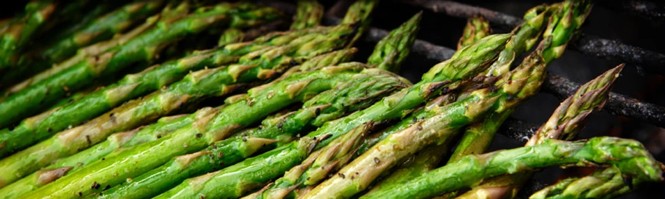

La Salette, Ontario
Farm-fresh
asparagus.
When spring comes to Norfolk County, our crew picks asparagus by hand for the roadside stand here on the Edwards family farm.
Visit the farm stand
Four generations
of growing.
Sam Edwards is the fourth generation of his family to grow asparagus. His dad, Grant, still lends his experience, and his mom, Colleen, runs the farm office.
Each spring, our seasonal crew brings in the harvest. Drop by for a bunch for supper, or give us a call ahead of time if you’d like a larger order set aside.
Visit SamGra Acres
Our roadside
farm stand
You’ll find us at the corner of Windham Road 5 and Windham West Quarter Line, in the north end of Norfolk County.
3764 Windham West 1/4 Line
La Salette, Ontario
Get directionsPlanning a trip?
Call 519-427-7125 to check what’s available before you head out.
Contact the farm
For a larger order, let us know how much asparagus you need and when you’d like to pick it up.
519-427-7125